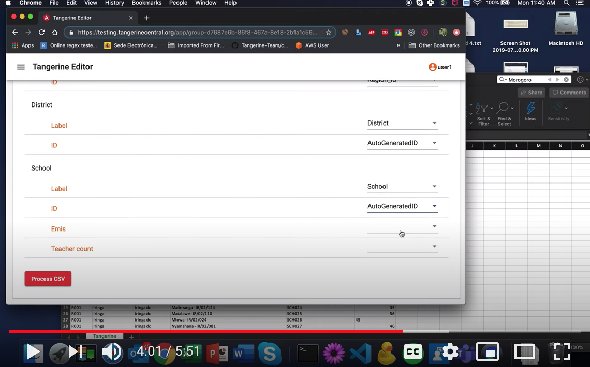

Item Editor
The item editor screen is similar for many of the item types. It usually contains the following elements:

Variable name: This name has to be unique for any instrument/form, as this will be used for the CSV data output as column header with each observation/child assessed/interview being a row. Avoid special characters and spaces, use lowercase only (e.g., “age”).
Label: This will be the item label/name that will be displayed to the user (e.g. “How old are you?”)
Question number: If you input a number in here, you will see that the entire questions is moved to the right and the question number stands out when looking at the page. Use this if you are looking for a visual effect like this.
Hint Text: This field allows you to add text that acts as a hint for the user (e.g., “Enter child’s age or year of birth, if known”)
Show if: This is the place to enter item-level skip logic (see section 5 of this manual).
Required: Selecting this checkbox marks the element as a required field. This ensures that users will enter a value before proceeding to other instrument sections or finalizing the instrument/form.
Disabled: Selecting this checkbox marks the element as inactive. The item is visible to the user on the tablet, but its value cannot be changed.
Hidden: Selecting this checkbox makes the element inactive AND invisible on the tablet.
GPS Item
Use the GPS item to record the location (longitude & latitude) of the user while filling in the instrument/form.
We suggest placing a GPS item always in its own section. Do not combine with other items.
When selecting to add an item of the GPS type, Tangerine presents the below item editor screen.

The following might be a way to configure this item:
Variable name: Enter “gps”.
Hint Text: Leave blank
Show if: Leave blank
Valid if: Leave blank
Required: Select this checkbox to make this a required field.
Disabled: Leave blank
Hidden: Leave blank
Hit “SUBMIT” to see the below item added to the section editor.

On the tablet this item will look like this:

LOCATION
This item type offers a dropdown listing of predefined location information such as, e.g., region, district, and school name. Before you add this item to your form, you need to upload a location list and configure Tangerine:
To see a video of how to do this 
First, decide what levels you would like to show and prepare a CSV file that contains your locations and ids. Each column header will present a location level (e.g. column A header might be region; column B header might be district, etc.). Make sure each level/column header contains only a single word and no spaces.
Second, define the location levels for Tangerine. Click Configure/Location Lists and add the desired levels using the ‘+’ sign
Click “Create a New Location Level”.

Enter the name of the “highest” location level under “Label” (e.g. region). Repeat this process for all other location levels, however, for each “child” level, select which is the parent level. E.g. in the case of district, the “Parent Level” would be “region”, and so forth. Hit “Submit” to save.
NOTE: You cannot delete location levels. Be careful and deliberate as you define them for your group. If you made a mistake or need to make changes, contact the Tangerine helpdesk.

Next, click the Import tab and select “Import CSV”. Double check that your CSV file contains only those columns that you have defined as levels and spelled exactly the same!
Download a sample location list file with IDs
Once you selected the CSV, Tangerine will ask you to map the location levels you already defined to the column headers found in your csv file.

Click on the small arrows to select the matching column header. For each ID field, select “Map a column to a level and select “AutoGeneratedID” for the ID as shown in the example below.

Then click “Process CSV” as shown in the screen above. Once processing is completed, you will receive a notification like this:

Once you have successfully uploaded a location list and prepared Tangerine, you can add the location input item to your form. The following might be a way to configure this item, once you completed the above steps.
If you think that your location list may change significantly, and you’d like to re-upload it at some point thus not implementing any changes manually, consider adding manual IDs to your location file. In the instruction above, you saw how to add the Autogenerated ID that Tangerine inserts. These IDs, however, are not persisted when you re-upload your location file. In such cases, where you know that you’d rather re-upload the entire file, we recommend that you insert an ID column and you preserve those IDs across versions of your location list. By doing that you ensure that any matching on location IDs (and not on Location labels) will be persisted.
To upload a location file with IDs, first create those IDS in the Excel file. Then, on the Map location field instead of selecting Autogenerated ID, select the column representing the ID for the corresponding level.
WARNING: Upon wiping out the location list when you have not generated the location IDS, all previous results collected will be missing the labels for those location and will contain only the old IDs; all data on the tablets under the Visits tab will show the ID rather than the label. This is why we highly recommend altering the location list manually or maintaining the IDs across different version of the location list in your Excel file.
Check out this Excel file to see a location list with IDs that you can import in Tangerine. The formula for generating the IDs can be copied to your own file: Download a sample location list file with IDs

Variable name: Enter “location”.
Hint Text: Leave blank
Show levels (ex. county,subcounty): Enter “province,district,school”
Show if: Leave blank
Valid if: Leave blank
Required: Select this checkbox to make this a required field.
Disabled: Leave blank
Hidden: Leave blank
Show meta-data: Leave blank
Hit “SUBMIT” to see the below item added to the section editor.
On the tablet this item will look like this:

NOTE: Without a location list, no location will be displayed, and the item will be seen as “loading”.
CHECKBOX GROUP (Checkbox, Radio Buttons, or Dropdowns)
This item type lets you define a checkbox item that lets a user pick one or more options.
The following might be a way to configure this item:

Variable name: Enter “books”.
Label: Enter “What kind of books do you like to read?”
Hint Text: Enter “Tick all that apply”
Show if: Leave blank
Valid if: Leave blank
Required: Selecting this checkbox to make this a required field.
Disabled: Leave blank
Hidden: Leave blank
Value (answer option): Enter the data value for the first answer option, e.g., “0”
Label (answer option): Enter the label for the first answer option, e.g., “None”
Hit “ADD ANOTHER” to add additional answer options, e.g.:
Value (answer option): “1”
Label (answer option): “Storybooks (fiction)”
Hit “ADD ANOTHER” to add additional answer options, e.g.:
Value (answer option): “2”
Label (answer option): “Books about real things (non-fiction)
When done adding all answer options, hit “SUBMIT”.
NOTE: The item type “CHECKBOX” only adds a single checkbox to the form, with the item label being the answer option label.

On the tablet this single checkbox item will look like this:

RADIO BUTTONS
Radio buttons are an item type used for items that allow for only one answer. The configuration for radio buttons is the same as for checkbox group with one exception. You will see that radio button options have a checkmark to indicate which answer is correct. This is used in conjunction with the Threshold defined in the section header.

When you have a threshold defined as 4, and for each question there is only one question option defined as correct, Tangerine will discontinue (hide the questions) after 4 consecutive replies are given as not correct. You can use this in EGMA tasks or in any other scenario where this makes sense
On the tablet the radio button item will look like this:

DROPDOWN
Dropdown is an item type used for items that allow for only one answer to be picked from a dropdown list of items. This item type is convenient when there are many options to choose from. The configuration for a dropdown item is the same as for checkbox group.
On the tablet the dropdown item will look like this:

TIMED GRID
This item type facilitates timed assessment approaches, e.g., to assess letter sound knowledge, oral reading fluency or math operations. The following might be a way to configure this item:
Variable name: Enter “letter_sound”.
Number of columns: Enter the number of columns by which you’d like to organize the items. Enter, e.g. “4” (Tip: choose less columns for larger items, like words or operation problems)
Hint Text: Leave blank
Auto Stop: The autostop field defines the number of consecutive incorrect items, starting from the first one, after which the test stops automatically. For example, with an autostop value of 10, if a child has the first 10 items all incorrect, the test will stop. If a child has the first 4 items correct and then the following 10 items incorrect, the test will not autostop.

Show if: Leave blank
Valid if: Leave blank
Mark entire rows: This option allows the user to mark and entire row of items as incorrect (e.g. if a child skipped an entire row of sounds in a letter sound assessment)
Required: Selecting this checkbox to make this a required field.
Disabled: Leave blank
Hidden: Leave blank
Duration in seconds: Enter the time allowed to complete this assessment, e.g. “60” for 60 seconds or one minute.
Options (each option separated by a space): Enter all grid items here. Separate each item by a space from the next; if you have extra spaces please remove them!
When done adding all answer options, hit “SUBMIT”.
NOTE: For these kids of assessments there are usually instructions preceding the assessment items. Insert those instructions as a “HTML CONTENT CONTAINER” item first, as shown below, followed by the “TIMED GRID” in the same section. We recommend to only feature the instructions (HTML Content) and Timed Grid in any one section of your instrument/form
On the tablet the timed grid item will look like this:

.
HTML CONTENT CONTAINER
This item type allows for flexible integration of headers, help text, or transition messages that do not require any user input or response. You can treat this container as a variable and hide or show different instructional text upon the selection of different options.
The following might be a way to configure this item:
Variable name: Enter “Assessor instructions”.
Show if: Leave blank
Valid if: Leave blank
Mark entire rows: This option allows the user to mark an entire row of items as incorrect (e.g. if a child skipped an entire row of sounds in a letter sound assessment)
Required: Leave blank
Disabled: Leave blank
Hidden: Leave blank
Rows 1-X: Insert assessor instructions, use html tags to insert line breaks or formatting (e.g. \<br> for a line break; \<b>text\</b> for bolding a piece of text, etc.).
When done adding all answer options, hit “SUBMIT”.

On the tablet this HTML container item will look like this:

Copying Items
If you have an element and/or content which is the same as a previous
element (e.g., radio buttons) that you would like to insert into your
instrument quickly, without having to click “INSERT HERE” again, there
is a COPY feature that you can use to do this. First, enter your
original content (e.g., variable name, labels, and values) and then
click SUBMIT. Once the first step is complete, next you click on the
 icon. Doing
so automatically creates a duplicate of all your original content,
except the variable name, which you will need to edit, if desired. In
the image below, you can see that all duplicates are auto-populated with
the name “widget,” followed by an underscore, and a mix of letters and
numbers (always different from the previous copy). If you would like to,
you can edit all the content of the copy to fit your needs.
icon. Doing
so automatically creates a duplicate of all your original content,
except the variable name, which you will need to edit, if desired. In
the image below, you can see that all duplicates are auto-populated with
the name “widget,” followed by an underscore, and a mix of letters and
numbers (always different from the previous copy). If you would like to,
you can edit all the content of the copy to fit your needs.